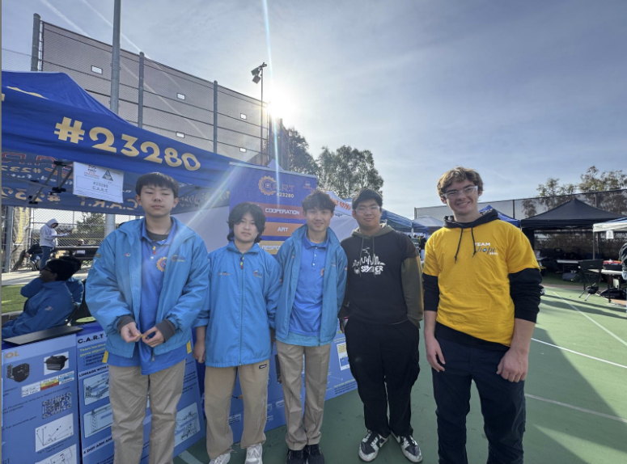
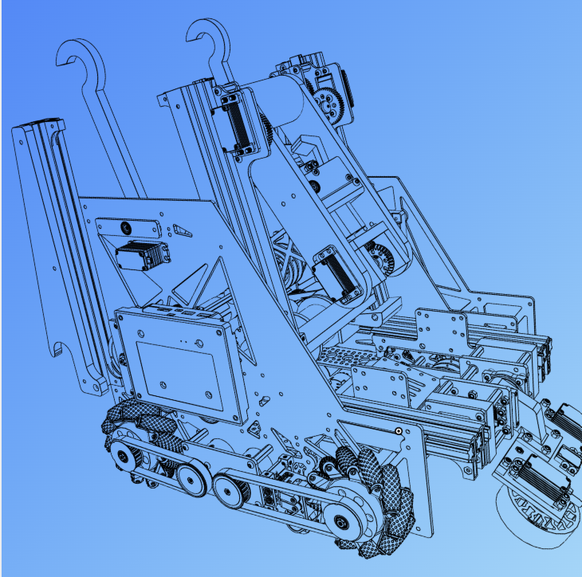
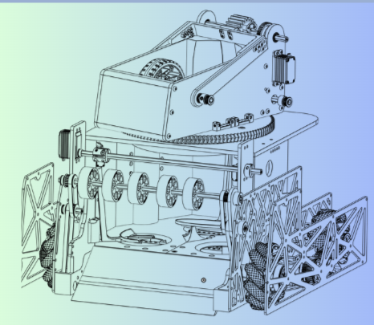

For 2.5 seasons I led C.A.R.T., a 15-person FIRST Tech Challenge team, as co-captain.
the robots

2024–25 · INTO THE DEEP
Slide-and-claw specimen robot
Belt-driven mecanum chassis, five intake iterations, color rejection in the transfer, three-wheel odometry and RoadRunner autonomous routines worth up to 83 points solo.
read more →

2025–26 · DECODE
Vision-guided turret shooter
AprilTag-tracking turret, regression-based shot model, dual flywheels under velocity PIDF with a readiness gate, color sorting, and a 12-ball Pedro Pathing autonomous.
read more →